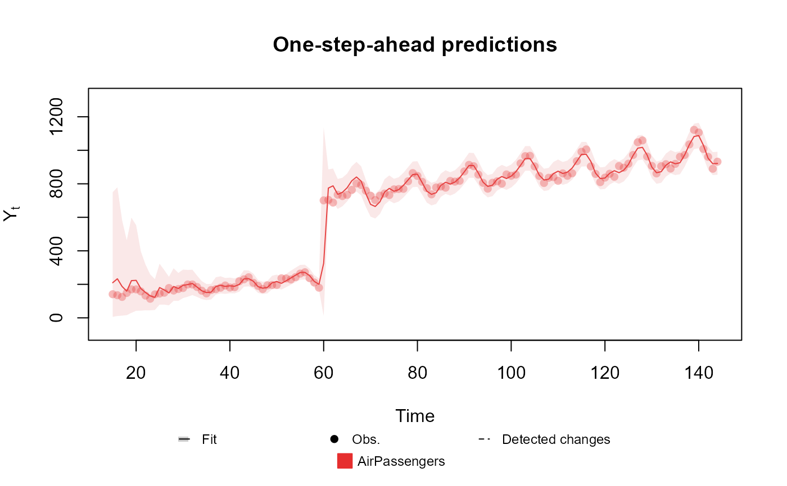

This function adds timely modifications to a dlm_block, such that in the specified time the model will override the usual value of the each variable to the value chosen by the user.
Usage
intervention(
block,
time,
var.index = 1:block$n,
FF = NULL,
D = NULL,
h = NULL,
H = NULL,
G = NULL
)Arguments
- block
dlm_block: The block to add the intervention.
- time
Vector: A sequence of integers indicating the time of the intervention.
- var.index
Vector: A sequence of integers indicating which variables should be modified in the intervention.
- FF
Array: A n x k x t array with the modified FF to be used during the intervention, where n is the length of var.index, k is the number of linear predictors in the block and t is the size of time (can be omitted if time is a scalar).
- D
Array: A n x n x t array with the modified D to be used during the intervention, where n is the length of var.index and t is the size of time (can be omitted if time is a scalar).
- h
matrix: A n x t matrix with the modified h to be used during the intervention, where n is the length of var.index and t is the size of time (can be omitted if time is a scalar).
- H
Array: A n x n x t array with the modified H to be used during the intervention, where n is the length of var.index and t is the size of time (can be omitted if time is a scalar).
- G
Array: A n x n x t array with the modified G to be used during the intervention, where n is the length of var.index and t is the size of time (can be omitted if time is a scalar).
See also
Other auxiliary functions for structural blocks:
TF_block(),
block_mult(),
block_rename(),
block_superpos(),
ffs_block(),
harmonic_block(),
noise_block(),
polynomial_block(),
regression_block(),
specify.dlm_block(),
summary.dlm_block()
Examples
data <- c(AirPassengers)
# Adding an artificial change, so that we can make an intervention on the data at that point
# Obviously, one should NOT change their own data.
data[60:144] <- data[60:144] + 500
level <- polynomial_block(rate = 1, order = 2, D = 0.95)
season <- harmonic_block(rate = 1, order = 2, period = 12, D = 0.975)
# Reducing the discount factor so that the model can capture the expected change.
level <- level |> intervention(time = 60, H = 1, var.index = 1)
# Comment the line above to see the fit without the intervention
outcome <- Poisson(lambda = "rate", data = data)
fitted.data <- fit_model(level, season,
AirPassengers = outcome
)
plot(fitted.data, plot.pkg = "base")
